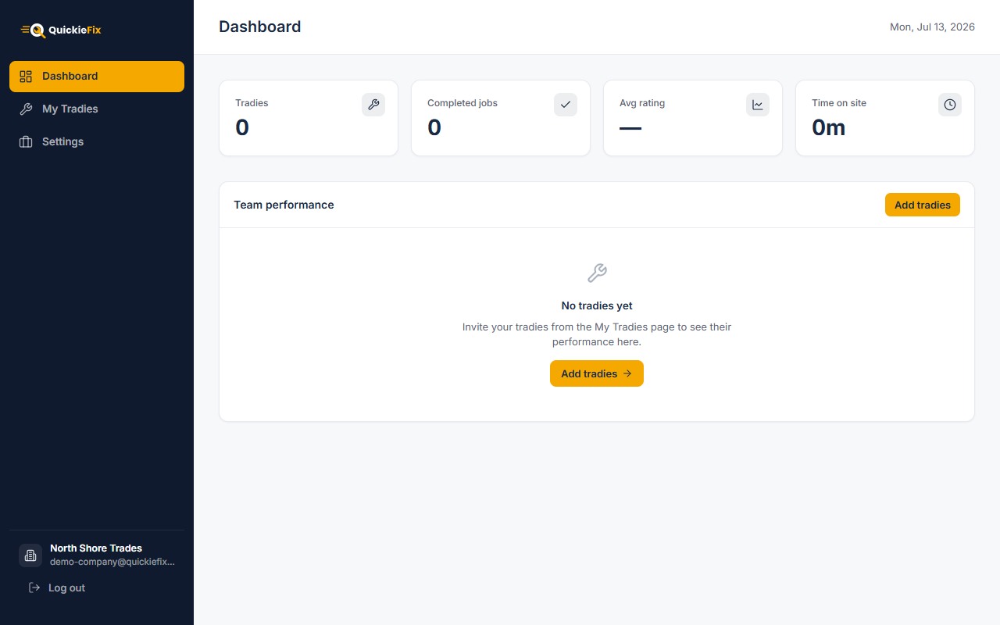

QuickieFix · User Manual
Run your whole trade team on QuickieFix: one roster, one rate card, one dashboard.
| Applies to | QuickieFix Business Portal + mobile app v1.2.0 |
| Audience | Trade businesses with multiple tradies (owners, ops managers, admins) |
| Business Portal | https://quickiefix-portal.web.app |
| App download (for your tradies) | https://quickiefix.store/download |
| Document version | 1.0 · July 2026 |
QuickieFix uses a tag model: the individual tradie is always the unit that gets dispatched, and your company is the tag that binds their jobs to your business for branding, rates, reporting and billing.
What that means in practice:
The lifecycle of a seat: issued → claimed → validated → (removed). You issue a tag code; the tradie claims it in the app; QuickieFix validates the identity match; from then on they're on your roster.

The Business Portal — create your company here.You land on your Dashboard. Your company status is "Setup" until you save a rate card (next section) — do that first.
Sign back in any time at the same URL with Sign in.
Settings → Rate card.
| Field | Required | Example |
|---|---|---|
| Hourly rate (NZD) | ✅ | 95.00 |
| Callout fee | optional | 80.00 |
| After-hours callout | optional | 140.00 |
Click Save & go live. Your status badge flips from Setup (amber) to Active (green): "Rate card saved — you are live."
Why this matters: the company rate card overrides every tagged tradie's personal rates. When any of your tradies accepts a job, the customer sees your company name and your rates, and those rates are snapshotted into the job as the agreed invoice baseline. One price list, no rogue quoting.
My Tradies → Add a seat.
QF-7K2P9M — with a Copy code button. Send this code to the tradie. It expires in 14 days and is single-use.What happens next:
| Stage | Status badge | Meaning |
|---|---|---|
| You issue the code | 🟡 issued | Waiting for the tradie |
| Tradie enters it in the app (Profile → Company → Claim seat) | 🔵 claimed | Waiting for QuickieFix validation |
| QuickieFix confirms the name/email/phone match | 🟢 validated | On your roster — jobs now carry your brand & rates |
| You remove them | ⚪ removed | Seat revoked |
The Tags table on the same page shows every code you've ever issued, its status, and actions (Copy code for unclaimed ones, Remove for active ones).
The tradie needs their own QuickieFix account first (registered in the app with their trade and licence, and admin-approved). The seat code links that account to your company — it doesn't create the account. To create accounts for them, use CSV import below.
My Tradies → Import from a spreadsheet — the fastest way to onboard an existing team:
firstName, lastName, email, businessName, primaryTrade, secondaryTrades, yearsExperience, licenceNumberprimaryTrade must be one of: electrician, plumber, gasfitter, builder, roofer, painter, locksmith, handyman, appliance_repair, landscaper, cleaner, pest_controlsecondaryTrades is semicolon-separated, e.g. gasfitter;handymanMike,Jones,mike@example.com,Lazer Plumbing,plumber,gasfitter;handyman,8,PGDB-12345For each imported tradie, QuickieFix automatically:
Your tradies just tap the email's download link, log in, and go available.
Point your team at the Tradie User Manual for day-to-day use. The company-specific differences they'll notice:
Everything else — availability, wave dispatch, browse & choose, live ETA, completion codes, timesheets — is the standard tradie experience.
Dashboard gives you the trading picture at a glance:
KPI cards: Tradies · Completed jobs · Avg rating · Time on site (aggregate)
Team performance table — one row per tradie:
| Column | Shows |
|---|---|
| Tradie | Name + business name |
| Trade | Primary trade |
| Jobs | Completed count |
| Rating | ★ average |
| Time on site | Total billable-style hours |
| Status | Approval badge |
Click any row for the tradie's detail page: KPIs, complete job history (customer, address, completion date, on-site duration, rating per job) and their customer reviews verbatim — your quality-control view.
| Concept | How it works |
|---|---|
| Customer invoicing | Your tradies' jobs carry your rate card. The customer is invoiced by your business directly — QuickieFix processes no payment. Every completed job generates a QF-XXXXXX confirmation code emailed to the customer with the rate snapshot; put it on your invoice as the shared reference. |
| Platform fee | A small flat fee per completed job ($15) — charged per tradie, invoiced monthly on the 1st, off-app, 7-day terms. |
| Shared credits | Your company can hold a shared pool of free-job credits — consumed before any tradie's personal credits, so early jobs cost nothing. Ask QuickieFix to load your pool. |
| Non-payment | Sustained non-payment leads to a dispatch hold on the affected tradies until settled. |
Settings page:
accounts@yourcompany.co.nz).My tradie claimed the code but still isn't on the roster. Claimed seats need a one-time QuickieFix validation (identity match). It shows as Pending verification in their app and 🔵 claimed in your Tags table until then. If it's stuck, check the name/email you issued matches their account exactly.
The code expired before they used it. Issue a new seat — codes are throwaway.
A tradie left the company. Tags table → Remove. Past jobs stay yours; future jobs are theirs alone.
Can a tradie be on two companies? No — one active tag per tradie.
Can I set different rates per tradie? Not within one company — the company rate card is uniform (that's the point). Genuinely different pricing tiers would be separate companies.
Where do I see what we owe QuickieFix? Each tradie's dashboard shows their month ("💳 This month"); the consolidated invoice arrives monthly at your billing email. Fees are flat per completed job, credits are burned first.
My import flagged rows as "Unknown trade".
The primaryTrade column must use the exact keys listed in section 5 (lowercase, underscores — e.g. appliance_repair).
QuickieFix · On-demand, verified tradies · quickiefix.store